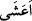

ayrılmayan bir şeytânı ona” yumurtanın kabuğunun yumurtayı çepeçevre kuşatıp
sardığı gibi sardırır “ona musallat ederiz.” Şeytan vesvese vererek onu ifsâd eder ve
hidâyete karşı körlüğü ona süsler.
“__WORD__/ya’şu” kelimesi “şın” harfinin zammesiyle “__WORD__ şeklinde olup görme
özürlü ve kör olmadığı halde kör gibi bakmak demektir. Bir de “aşiye-ya’şa” denir ki
“radıye-yerdâ” gibidir. Bu ise kişinin gözünde görmesine engel bir durum olduğu
zamandır.
Râgıb şöyle demiştir: “__WORD__/el-aşâ” fetha ve kasrile “gözde meydana gelen bir zulmet
ve karanlık” demektir. Meselâ “__WORD__/a’şâ’ bir adam”, yahut “__WORD__/aşvâ bir kadın”
denilir.
Kamus’ta şöyle denilmiştir: “__WORD__/el-aşâ” gece ve gündüz kötü görmektir. Araplar “__WORD__ /habatahu habta aşvâe” derler ki, “basiretsiz, şuursuz, bilgisiz ve tedbirsiz
olarak kör deveye bindi” demektir.
Burada “zikir”den maksad Kur’ân’ı Kerîm’dir. “Zikr”in “Rahmân” kelimesine muzaf
olması ise Kur’ân’ın Allah tarafından genel bir rahmet olduğuna işârettir. Yahut “zikir”
burada mefûlüne muzaf kılınan bir masdar olup mânâ şöyledir: “Kim Kur’ân’a karşı kör
olur, gözlerini kapatır, ondan yüz çevirirse” veya “Rahmân Teâlâ’yı zikretmekten yüz
çevirir, Allah’ı unutursa” demektir. Bu kişi, dünyanın zînet ve süsüyle çok meşgul olup
şehevî ve fânî lezzetlere çok daldığı için böyledir.
“__WORD__/kayz”, yumurtanın en dışta olan kuru kabuğudur.
“__WORD__/karîn” arkadaş, dost, yoldaş gibi mânâlara gelir. İşte şeytan Kur’an’a gözünü
kapatıp Allah’ı unutan kimseye arkadaş olup ondan hiç ayrılmaz. Sürekli ona vesvese
verir. Onu şerre karşı tahrîk eder. Körlüğü hidâyete, çirkini güzele karşı süsleyip kişiyi
sapıtır.
Peygamberimiz (s.a.) şöyle buyurmuştur: “Allah bir kula körlük murad ettiği zaman,
ki bu kulun irâdesiyledir ona ölümünden bir sene önce bir şeytan musallat eder. Artık
bu adam güzel şeyleri çirkin görüp bunlarla amel etmez. Çirkin şeyleri de güzel
görüp onları işler.”[160]
Bu şeytan kâfir cinden başka bir şeytan olsa gerektir. Yoksa herkese sardırılmış olan
cinlerden bir şeytan vardır. Ve şeytan o kişiden zaten ayrılmaz. Nitekim Peygamberimiz
(s.a.) bir başka hadisinde şöyle buyuruyor: “Sizden her birinizin bir tane cinlerden bir
tane de meleklerden kendisine sardırılmış arkadaşı vardır.” Sahâbe-i kirâm: “Yâ
Rasûllallah! size de cinlerden bir şeytan sardırıldı mı?” diye sorunca Peygamberimiz
(s.a.): “Evet bana da bir şeytan musallat oldu. Fakat Allah Teâlâ ona karşı bana
yardım etti. Ve o şeytan Müslüman oldu. Artık bana sadece hayrı telkin etmektedir”
buyurdu.[161]
Nefahatü’l-üns’ de şöyle denilmektedir: Şeyh Ebu’l-Kàsım Mısrî (k.s)’nin mümin
cinlerden bir arkadaşı vardı. Mescidde oturduğu bir sırada cin ona şöyle dedi: “Ey
şeyh, bu insanların durumunu nasıl görüyorsun?” Şeyh şöyle cevap verdi: “Bazısı